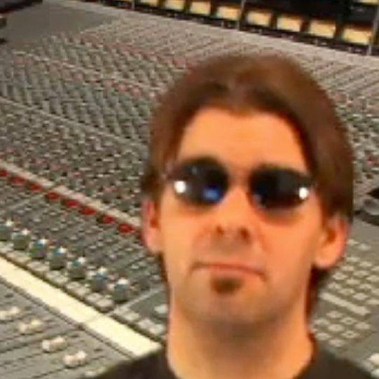

I have an information systems degree and an MBA, both from Pittsburg State in Kansas, finished in 1999 and 2000. Which is to say I was trained to understand computers and business at the exact moment computers were about to dismantle the music business.
In 2001 I took over the commercial music program at Labette Community College. I was chairing a program that taught recording while recording itself moved inside the computer — and then editing, and photography, and distribution, and then, with file sharing, the business model underneath all of it.
Everyone in the field was very good at a craft being rebuilt beneath them. Engineers who had spent fifteen years learning a console were handed a mouse. Nobody was teaching them. The manuals were written for the software, not for the person holding it.
That gap turned out to be the whole career. Middle Tennessee State in 2003, first as associate chair, then in the Department of Recording Industry. Belmont since 2010.

Building the thing I wished existed
Multi-Platinum.com started because the training people needed wasn't for sale. We put working Nashville engineers on camera and had them show their actual sessions — not demos, real records with real problems in them. It became one of the first online training companies in music production, and I've produced more than fifty courses through it since.
Two books followed, both with Focal Press and both distributed internationally: Multi-Platinum Pro Tools in 2006, and Pro Tools 9: The Mixer's Toolkit. Writing them taught me something I didn't expect — that the hard part of teaching technology is never the technology. It's finding the one sentence that makes a frightened professional believe they can still do their job.
Alongside that I kept producing. I post-produced more than 140 episodes of Presleys' Country Jubilee for the RFD Network, which went out to thirteen countries and about half a million people a week. I engineered for Vince Gill, Earl Scruggs, and the Oak Ridge Boys. I mixed the orchestral score for Peter Pan with Cathy Rigby. I cut Tonight with Deborah Norville for MSNBC. I cut guitar lessons that reached a hundred thousand students.
None of that was a plan. It was the ordinary working life of someone who could operate the new tools while the industry figured out what it wanted to be.
Six thousand students
I've taught at Belmont University for most of two decades — currently as Associate Professor of Media Production in the Mike Curb College of Entertainment & Music Business. Somewhere past six thousand students have come through my classrooms.
Since 2009 I've been on faculty at more than fifty GRAMMY Camps — Los Angeles at USC, New York at the Converse Rubber Tracks studios, Nashville at Belmont. A week at a time, high school students from all over the country, learning to record. I've also written curriculum for the GRAMMY Foundation: GRAMMY Camp: Weekends and The Recording Academy Presents: GRAMMY Career Pathways.
The camp students are the ones who recalibrated me. They show up with no fear of the equipment at all, and it's a useful reminder every summer that the anxiety I spend my career treating is learned, not native.

In 2017 I gave a TEDx talk about virtual reality and what happens when an experience that used to require money and travel becomes something anyone can have. I was arguing about VR. I'd make the same argument now about AI, almost word for word. I've since served on the TEDxNashville board and produced the multicamera shoots for other people's talks, which is its own education in what makes an idea land.
In 2022 I finished a doctorate in education at Tennessee State. The dissertation studied how audio engineering faculty actually experienced teaching through COVID — a hands-on, room-dependent discipline forced overnight into a format nobody had designed it for. Partly stubbornness, partly a decision that if I was going to spend my life teaching adults through technological upheaval, I should study how adults learn.
Why I'm doing this now
AI is doing to every profession what digital did to mine. Same shape, wider blast radius. The same people are having the same 2 a.m. thought: I'm too far into this career to start over, and too far from retirement to wait it out.
The people teaching AI right now are mostly twenty-five and have never had a career interrupted. I have. I've also had the specific job of walking experienced professionals across a technology gap, roughly six thousand times.
So I'm doing it in the open — reinventing my own work with these tools and publishing what happens, including the parts that don't work. Not because I've figured it out. Because I'm the same distance from figuring it out as you are, and I've been the guide for this exact crossing before.
I have a doctorate, three decades in, kids, and a mortgage. If I can do this at my age, so can you.
— Nathan